Explore the dynamics behind the signal.
Beyond the
waveform.
DIFASE is an interactive research space for exploring neural recordings, understanding diffusion models, and investigating how brain signals change over time.
From continuous EEG recordings to generative modeling: a visual research showcase grounded in published methods and reproducible evidence.
Explore the platform ↗Explore DIFASE.
Choose where to begin.
More modules in development
As the master's research progresses, new experiences will make it possible to explore validated generative experiments, neural signal comparisons, and the evolution of preictal EEG. The platform will grow alongside the scientific work.
EEG Data Explorer.
Explore an annotated brain recording from the Temple University Hospital EEG Epilepsy Corpus. Follow its changing waveforms, examine a seizure, and discover its frequency content.
Scalp frequency map.
Values are calculated from the EEG recording and interpolated between electrode locations; this is not a map of cortical sources.
Power spectral density.
Whole-recording Welch PSD. Select a band above to compare spatial power across electrodes, or select an electrode on the scalp to inspect its spectrum. Band percentages refer to power within 0.5–45 Hz.
Inside the signal.
This example comes from the Temple University Hospital EEG Epilepsy Corpus (TUEG). It shows a complete, processed recording with one annotated seizure. You can move through the recording, isolate frequency bands, and inspect how activity differs before, during, and after the event. Amplitudes are normalized, rather than shown as original voltages.
Diffusion Playground.
Watch structure dissolve into noise. This is a mathematical forward-process demonstration, not trained neural network inference.
From signal to noise.
xₜ = √ᾱₜ x₀ + √(1 − ᾱₜ) εChange the noise prior to compare uncorrelated and temporally correlated perturbations. This demo uses a smooth illustrative ᾱₜ schedule.
And back again.
During generation, a denoising network reverses the process step by step. This website explains the methodology; validated outputs from the research will be showcased separately when available.
Explore the neural architecture ↗Architecture Explorer.
An interactive system map of the complete neurophysiological DDPM introduced by Vetter, Macke & Gao (2024). Explore the paths of noise, prediction, training and sampling in one diagram.
Interactive adaptation of the published method. The highlighted components explain choices investigated in Vetter et al. (2024). In DIFASE, the future research question is how these generative principles might describe EEG activity as a seizure approaches.